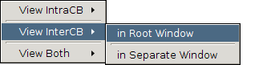

|
Happens Before Viewer
|
Running the Happens Before Viewer
The Happens Before Viewer is actually an external tool and is launched from within the
Analyzer View or on a pre-existing log file (generated
at runtime by GEM) directly. This is done via context menus as shown in the image below.
Note: The log file and profiled executable generated by GEM will be in a directory named "gem" at
the top level of the current project.
-
From the Analyzer View, simply click the HB Viewer button after GEM has been run.
-
From the Project Explorer window, right click on the generated log file
and select
 Launch Happens Before Viewer from the GEM context menu.
Launch Happens Before Viewer from the GEM context menu.

Understanding What You See
-
Showing Interleaving: indicates which interleaving is currently being shown and
the total number of interleavings GEM examined.
-
Deadlock: Is either followed by no or
yes, and indicates if any of the interleavings contain a deadlock.
-
Red Bordered DEADLOCK: At the bottom of the window indicates that at this point the currently selected
interleaving is deadlocked. Calls above this will be issued and calls that would come afterward are not shown.
-
Process[Number]: This specifies which Process the calls below it belong to (Where Number is the number
of the process in question). The color of the border around this text is arbitrary and serves only to help
the human eye distinguish the various columns and return to a column of interest more quickly.
-
Blue Arrows: Show CB (Completes Before) edges that connect intra-process MPI calls
(calls within the same MPI process). A CB edge is a guarantee that the source must complete before
the destination. For example a Barrier will always have a CB edge connecting it to the next call in
the same process because the next call cannot complete before the barrier is finished. It is
important to note though that there is only a CB edge to each call blocked by the call in
question. As an example lets imagine that a Barrier is followed by a second Barrier and then a Send. There
is a CB edge between the first and second Barrier and between the second Barrier and the Send, but none
between the first Barrier and the Send because it the second Barriers that directly blocks the send. The
CB edges are by default not shown, but the Changing What You See section
below will show you how to make them appear.
-
Red Arrows: Show CB edges that connect inter-process MPI calls (calls between different processes).
-
Black Arrows: Connect MPI calls that match. For example a Send will have a Black Arrow pointing to the
Receive that picks up its message.
-
Dotted Black Arrows: Like solid Block Arrows these connect calls that match. The only difference
is that these connect a Red Bordered call.
-
Red Borders: Indicates that this call is the source of a different interleaving and is
the cause of the non-determinism (most likely some type of Recv with an MPI_ANY_SOURCE). In other words
what is currently being displayed is one potential match for the Red Bordered call, but that another
possible match exists and can be viewed by changing which interleaving is being shown.

-
To change which Interleaving you are viewing you can click on the < or > buttons or click “Goto”
after providing the desired interleaving number in the text box next to it.
-
To toggle whether or not you want matches to shown use the check box next to “Show Matches”.
-
To reset the view back to how it was before you made changes click the “Clear” button.
-
To see the source file that generated the log click on “Show Source”.
-
To add Completes-Before (CB) Edges, there are several choices.
For a given call, process or some subset of either (e.g. you can select all processes and all calls or
some subset therein)
-
right click the call and select either View InterCB, View IntraCB or View Both as desired.
-
Lastly you will need to indicate whether you want to view the edgesin: the Root Window
or in a Separate Window (see images below). A separate window with IntraCB Edges is
shown below.


You may also change which log file you are viewing by clicking: File -> Open Trace and navigate to the desired file.
Back to Top | Back to Table of Contents
School of Computing * 50 S. Central Campus Dr. Rm. 3190 * Salt Lake City, UT
84112 * isp-dev@cs.utah.edu
License